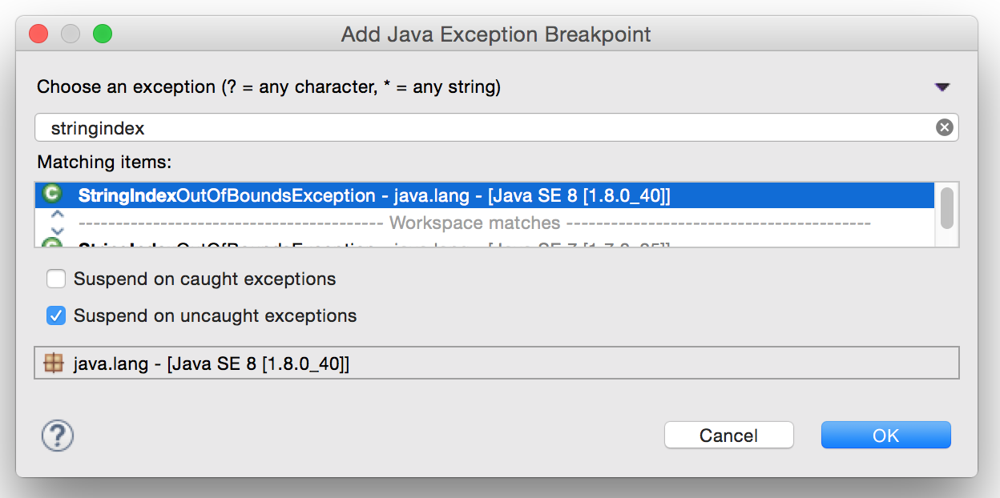

Exceptions
The code in a method can call another method, which can in turn call another method, and so on. When an error occurs in a method, Java uses a mechanism called exceptions to report the error back to the caller of the method. In turn, that method may need to report the error back to its caller. If nothing is done to handle the exception along the way, it gets displayed on the console and the program exits.Interpreting an exception trace
We'll try a couple of things using the methodfindFirstP:
- Edit the main method of
SimpleLoopsas follows: comment out the first four lines, and uncomment the next two lines:int result = findFirstP("stop"); System.out.println(result); - Run the program and verify that the result is correct.
- Now, comment out those two lines and uncomment the next two, so that it tries to find
the first "P" in "xxxyyyzzz":
int result = findFirstP("xxxyyyzzz"); System.out.println(result);Run it again. - You'll see a list like this, called a stack trace.
Exception in thread "main" java.lang.StringIndexOutOfBoundsException: String index out of range: 3 at java.lang.String.charAt(String.java:695) at lab6.SimpleLoops.findFirstP(SimpleLoops.java:91) at lab6.SimpleLoops.main(SimpleLoops.java:25)
The first line is the most important: the type of exception is a big clue as to the nature of the error, in this case a "string index out of bounds". The rest of the lines give us a picture of the call stack. This shows us that the exception actually occurred incharAtin the String class, which was called byfindFirstP, which was called bymain. In most cases, you can also see the line number at which the call or exception occurred. - In Eclipse, the classes listed in the stack trace are actually hyperlinks, so you can quickly jump to the line of code that caused the error. Start reading at the top of the stack trace. Notice that the first call in the list is to the
charAtmethod of String. Remember, we don't want to debug the Java libraries, so skip that one, and go down to the next line, thefindFirstP. We recognize that as code written by us, so click on it and Eclipse will jump to the indicated line of code. - We can see which line of code is causing the problem. That is sometimes enough to figure out what is wrong, but not always. The problem is, we can't see the values of other variables that might be affecting execution at that point. One thing you can do pretty easily is to set a breakpoint on that line, run the program again in debug mode, and step through the loop using the resume button. Keep track of the values of the variables just before the error occurs. Try it (but don't fix the error yet).
Setting an exception breakpoint
Sometimes what we really want is a way to automatically stop execution right before the error occurs without having to step through all the code leading up to it. There is a way to do this.- In the top menu bar of Eclipse is a menu called "Run". Under "Run", find "Add Java Exception Breakpoint". Start typing "StringIndexOutOfBoundsException" until you see it available in the dialog. Select that exception.
- Un-check the checkbox labeled "Suspend on caught exceptions", and check the one labeled "Suspend on uncaught exceptions". (We will explore what this "catching" business means in a few weeks.)

- Now, run the program in debug mode.
- Instead of exiting and printing the exception stack trace as before, the debugger suspends execution right before the exception occurs. (Depending on your JDK installation, you may see the source code for the
charAtmethod.) - What we want to know is: what was our code doing that caused the exception? So, in the Debug pane, look in the call stack for the method
findFirstPand click on it. Now we can examine the values of the variables that were in effect when we made the fateful call tocharAtthat caused the error. Notice we have a string of length 9, whose characters are indexed 0 through 8, and we also have an indexiwith value 9. - Go ahead and fix it now.
Now that we are starting loops, you'll find that StringIndexOutOfBoundsException (and its relatives) is going to be your New Best Friend for a while. There are many, many other kinds of exceptions we'll see before the semester is out, and the simple techniques you have experimented with just now will be useful to you for a long time.